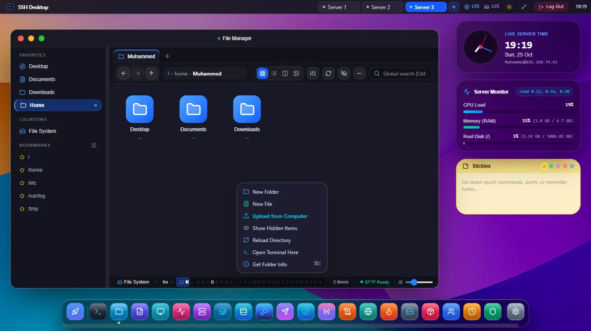

The Modern FileZilla Alternative
Tired of FileZilla's outdated 2000s interface, bundled installer bloatware, and missing terminal? Upgrade to SSH Desktop: dual-pane SFTP, in-place server zip extraction, Monaco code editor, and built-in terminal tabs.

4 Reasons Developers Are Leaving FileZilla
FileZilla was built in 2001. Modern DevOps workflows require speed, security, and unified tooling.
❌ The FileZilla Problem
- No Archive Extraction: Forces you to download a 2GB zip to extract it locally and re-upload 10,000 files.
- No Code Editor: Requires downloading files to Notepad or external editors and waiting for upload prompts.
- No Terminal: Requires launching PuTTY or another terminal app side-by-side to run shell commands.
- Bundled Adware History: Official SourceForge/installer bundles have included unwanted sponsored software.
✓ The SSH Desktop Solution
- In-Place Server Extraction: Extract
.zip,.tar.gz, and.tar.bz2directly on the server in 0.2s. - Embedded VS Code Monaco Editor: Full syntax highlighting, diff preview, and Ctrl+S SFTP sync.
- Integrated Xterm.js PTY Terminal: Run
systemctl,docker, andgitin the same window. - 100% Clean Open-Source: Zero ads, zero telemetry, zero bundled software, verified SHA-256 signatures.
SSH Desktop vs FileZilla vs WinSCP
| Feature / Capability | SSH Desktop | FileZilla | WinSCP |
|---|---|---|---|
| In-Place Remote Zip Extraction | Native 1-Click | No (Manual download) | Custom command only |
| Embedded Monaco Code Editor | VS Code Core Built-in | None (External only) | Basic text editor |
| Interactive PTY Terminal | Built-in Xterm.js Tabs | None | Launches PuTTY |
| Docker & Container Hub | Full Container GUI | None | None |
| Cross-Platform Parity | Windows, Mac, Linux | Windows, Mac, Linux | Windows Only |
| Clean Installer (No Adware) | 100% Clean / Audited | Sponsored offers | Clean |
Frequently Asked Questions
Can I import my saved FileZilla sites and bookmarks into SSH Desktop?
Yes! SSH Desktop provides a built-in Site Manager importer that reads FileZilla's sitemanager.xml file and automatically imports your saved hostnames, ports, usernames, and key associations.
Does SSH Desktop support resuming interrupted file transfers?
Yes. Our parallel streaming SFTP chunk engine supports automatic resumption for large multi-gigabyte ISOs and database backups if your network connection drops.
Is SSH Desktop really free?
Yes, 100% free and open-source under Apache 2.0 / MIT. No subscriptions, no ads, and no premium paywalls.
Upgrade Your SFTP Experience Today
Say goodbye to FileZilla's limitations. Download SSH Desktop for Windows, macOS, or Linux.